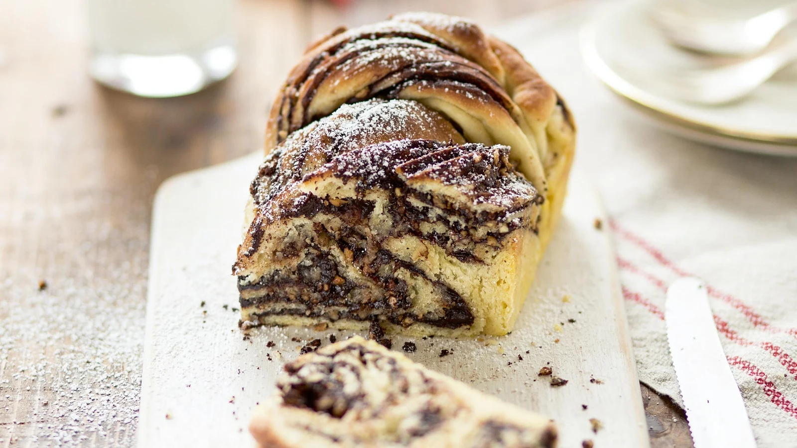

Chocolate Babka

What Is a Babka?
A babka is a traditional braided bread that originated among the Eastern European
Jewish communities of Ukraine and Poland. ‘Babka’ means grandmother. It is like
a sweet Challah or Brioche Bread with ribbons of chocolate (or sometimes cinnamon)
throughout. These swirls of ganache separate the buttery crumb into melt-in-your-mouth
layers. It’s a truly delicious baked treat that we love to make for the holidays,
from Easter to Christmas.
Ingredients
- Milk – The milk for the dough should be warm, but not hot.
- Active Dry Yeast – Don’t forget to check the dates on your yeast packets to ensure it’s not expired.
- Sugar – Sugar helps feed the yeast, and sweetens the dough.
- Flour – I’ve had the best results with regular all-purpose flour.
- Eggs – remember let them come to room temperature.
-
Butter – You’ll need melted butter for the batter as well as for brushing the top
of the babkas before they’re baked. You can also brush the tops with
Coconut Oil after baking if you’d like.
-
Salt and Vanilla – use pure vanilla extract. Salt helps to balance and enhance
the flavors of the dough.
-
Chocolate Ganache – a combination of heavy cream, sugar and semi-sweet
chocolate chips make the decadent chocolate sauce.
Recipe instructions
How to Make Chocolate Babka:
-
In the bowl of a stand mixer with the whisk attachment, add warm milk,
sprinkle top evenly with yeast and let sit for 7 min. Whisk in ½ cup flour and 2
Tbsp sugar. Cover with plastic wrap and let rise in a warm oven (100˚F) for
25-30 min or at room temp 35-45 min until puffed.
-
Whisk in eggs, 3 Tbsp melted butter, remaining 2 Tbsp sugar, salt, and vanilla.
Using the dough hook on speed 2, add the remaining 3 cups of flour
(1/2 cup at a time, letting it incorporate between additions). The dough
should feel barely sticky to the touch but should not stick to the sides of the
mixing bowl. Add an extra 1-2 Tbsp flour if needed. Once all flour is in,
continue kneading on speed 2 for 8-10 min.
-
Cover with plastic wrap and let rise in a warm oven for 1 hr or at room temp 2 hrs,
until doubled in size. Meanwhile, make the chocolate ganache (instructions below).
-
Once the dough has risen, divide it in half. Generously dust flour on a clean work
surface and place 1 piece of dough in the center. Sprinkle dough with flour and
roll into a 12" wide by 16" long rectangle. Spread with 1/3 of the ganache. Roll the
dough up tightly starting with the shorter side.
-
Cover with plastic wrap and refrigerate for 15 min. Cut each chilled roll in half
lengthwise with a sharp knife, keeping the top 1/2" of the roll connected. Twist
halves together a few times.
-
Butter and line 2 loaf pans with parchment paper. Carefully transfer the dough to
the prepared pans. Cover with plastic wrap and let rise in a warm place for 30-45 min
or at room temp for 1 to 1½ hours or until puffy. Preheat oven to 350˚F.
-
Brush loaves with remaining 1 Tbsp melted butter and Bake at 350˚F on the center rack
for 30 min or until golden brown. Brush hot loaves with coconut oil to give them a
sheen or spread the remaining chocolate ganache over the tops.
How to Make Chocolate Ganache:
-
In a small saucepan over medium heat, combine heavy whipping cream with 1/4 cup
sugar, stirring until dissolved and cream reaches a simmer then remove from heat.
-
Add chocolate chips to a medium bowl and pour the hot cream over the top, wiggling
the bowl around to ensure the chocolate chips are covered. Cover the bowl and let sit
for 5 minutes. Uncover and whisk starting from the center and moving outward until a
smooth chocolate sauce has formed. Cool completely to room temperature or until the
sauce has thickened. To speed set, refrigerate the ganache for 10 minutes at a time,
whisking to check the consistency.
Return to main page